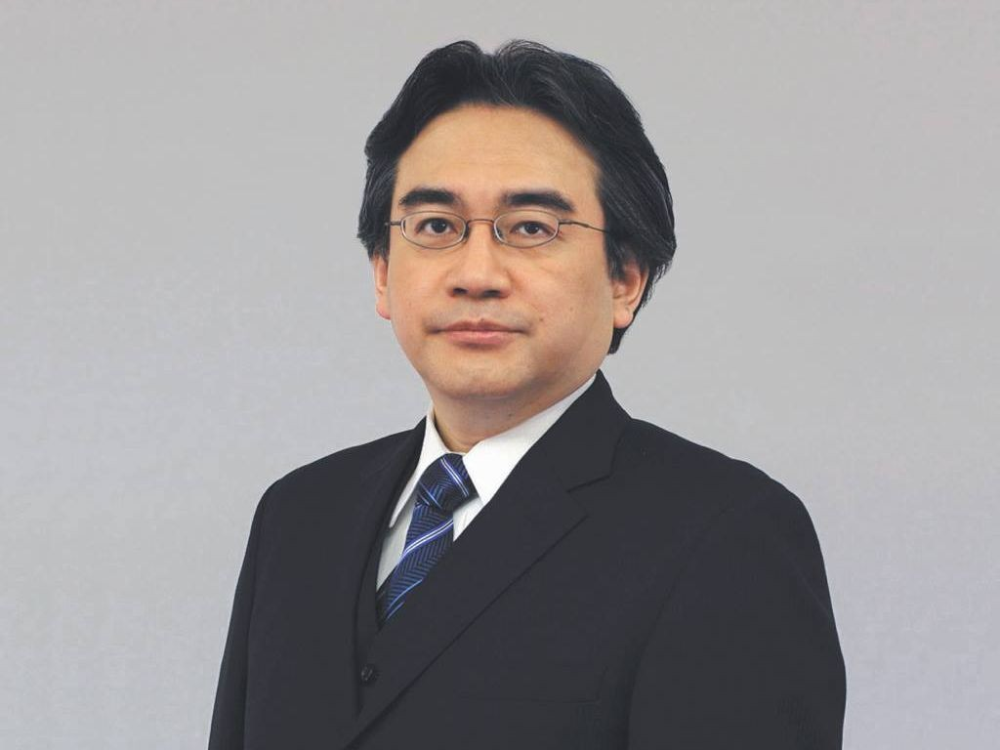

Satoru Iwata 
岩田 聡
1959-2015
"On my business card, I am a corporate president. In my mind, I am a game developer. But in my heart, I am a gamer."

Timeline of Iwata's Life:
- 1959 - Satoru Iwata is born in Hokkaido Prefecture (北海道), Japan
- 1978 - 1982 - Studies Computer Science at the Tokyo Institute of Technology University
- 1983 - Joins HAL Laboratory, becoming the 5th full-time employee. The company goes on to develop franchises like Earthbound, Kirby and Super Smash Bros.
- 1984 - Ballon Fight is released, programmed by Iwata
- 1993 - Becomes president of HAL and saves it from financial jeopardy
- 1998 - Develops Super Smash Bros. along with Masahiro Sakurai
- 1999 - Ports Pokemon Red and Green to the Nintendo 64 for Pokemon Stadium
- 2000 - Joins Nintendo as a 20-year veteran of the industry
- 2002 - Iwata named president of Nintendo after Hiroshi Yamauchi retires, the first Nintendo president to be outside of the founding Yamauchi family line
- 2004 - Nintendo releases the DS
- 2005 - GDC 2005 Keynote - "On my business card, I am a corporate president. In my mind, I am a game developer. But in my heart, I am a gamer."
- 2006 - Iwata Asks begins, where Iwata interviews game developers
- 2006 - Nintendo releases the Wii
- 2011 - Nintendo releases the 3DS
- 2011 - Nintendo Direct presentations begin, with Iwata hosting many
- 2012 - Nintendo releases the Wii U
- 2014 - Iwata cuts his pay in half for several months after Nintendo profits plummet
- 2014 - Iwata skips E3 for health-related reasons
- 2015 - Nintendo announces plans to expand to mobile devices
- 2015 - Satoru Iwata passes away on July 11, 2015 at the age of 55 due to bile-duct cancer
"Even if we come from different sides of the world, speak different languages. Even if we eat too many chips, or rice balls. Even if we have different tastes in games. Every one of us, here today, is identical, in the most important way. Each one of us has the heart of a gamer."
Read more about Satoru Iwata's life and his legacy on Wikipedia.
Written and Coded by Sean Miles